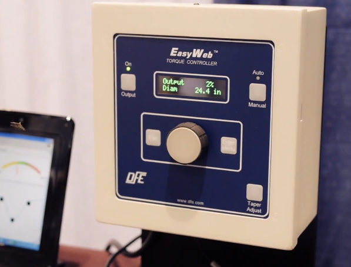

My Projects
-
SpectrumScan
SpectrumScan is an open source spectrum analyzer that lets you see the frequencies in the radio waves whizzing by around you everyday! All you need is an RTL-SDR radio reciever and a beaglebone to build your very own 2GHz spectrum analyzer. -
ADC & DISPLAY
This project shows you how to interface a 24-bit ADC using the SPI bus and display the ADC result on a 7-Segment LED display using the I2C bus. The software is written in C and contains useful data acquistion code including signal filtering and error checking. -
Boggle
Fun Boggle game I wrote in C++ where the user competes against the computer. The heart of the program consists of two recursive backtracking algorithms to find words on the board, one for the human player and another for the computer. -

EasyWeb Tension Controller
This is a product I designed while working at DFE. It is an open-loop torque controller used for tension control applications in the industrial automation industry. I am very proud of the work I did on this project since I was the sole designer and wrote all the software in C, and also designed the board-level hardware. It was launched in early 2014 with great success and the gratification of a job well done.
More Projects
I frequently push to github so my repo is always changing with new projects as I get new ideas and interests.